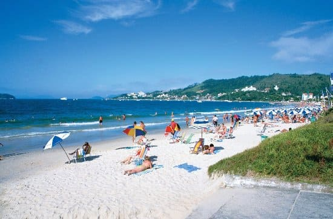

Las playas de Arraial do Cabo son la principal atracción del lugar ya que son conocidas como el Caribe brasileiro y se confirma en cada playa visitada.Hay una playa para cada gusto: playas con la tranquilidad de una pileta, playas con grandes olas, playas desiertas y llenas, playas para hacer snorkel, playa con miradores naturales, etc. La ventaja es que las playas son muchas y están próximas entre sí, es posible recorrerlas casi todas a pie.
Brasil
Arraial do Cabo
Visitá Cabo Frío
De Cabo Frio a Arraial do Cabo hay apenas 13 kilómetros. Desplazarte de una ciudad a otra es muy sencillo. Si tienes coche propio o alquilado tendrás que ir por la carretera RJ-102, no tiene más misterio.
En el caso de que necesites moverte en transporte público, hay autobuses de la empresa Salineira que hacen el trayecto entre ambas ciudades. Cada 10 minutos sale uno. El precio es de 4 reales (1,20 euros).
Tardarás en llegar aproximadamente 15 minutos, pero dependiendo del tráfico se te puede alargar a 20 ó 25.
Por otro lado, Cabo Frio es una ciudad bastante agitada. Siempre hay mucho bullicio y coches por todos lados.
Time Warp 2022
El Time Warp Festival es un festival internacional de música electrónica cuya primera edición fue el 26 de noviembre de 1994 en la ciudad de Ludwigshafen am Rhein, Alemania. Desde entonces se celebró entre una y tres veces por año en distintas ciudades de Alemania y Brasil.
El festival de origen alemán regresa a Brasil en noviembre para materializar la segunda edición de Time Warp que tendrá lugar en San Paulo.